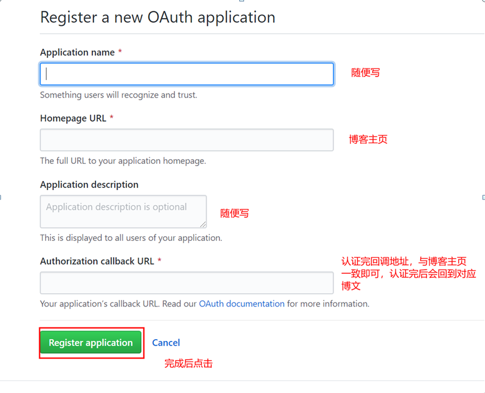
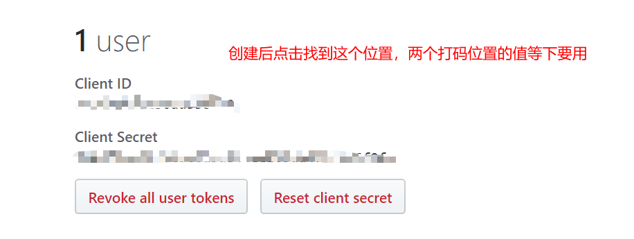
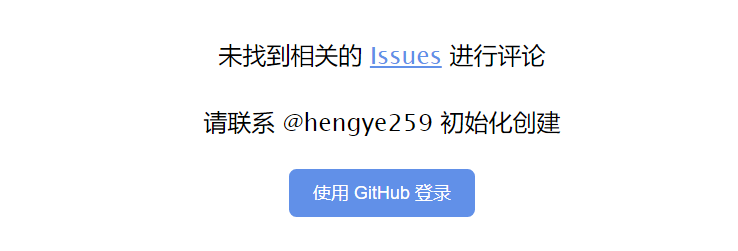

舍弃自研留言微服务,原因是穷~~
3.0版本使用gitalk，唯一缺点是对非软件行业的朋友们不友好。
再次华丽接入教程：
首先创建github认证，进入https://github.com/settings/applications/new，按下图所示填好并保存。


把以下代码直接拷到，是直接拷到需要放评论的html文件中的相应地方。
<!-- Gitalk 评论 start -->
<link rel="stylesheet" href="https://cdn.jsdelivr.net/npm/gitalk@1/dist/gitalk.css">
<script src="https://cdn.jsdelivr.net/npm/gitalk@1/dist/gitalk.min.js"></script>
<div id="gitalk-container"></div>
<script type="text/javascript">
var gitalk = new Gitalk({
// gitalk的主要参数
clientID: '上图client Id打码的值',
clientSecret: '上图client secret打码的值',
repo: '你的仓库名，如：<username>.github.io',
owner: '你的用户名',
admin: ['你的用户名'],
id: location.pathname,
distractionFreeMode: false // Facebook-like distraction free mode
});
gitalk.render('gitalk-container');
</script>
<!-- Gitalk end -->
配置完后可能出现如下的情况，只需要点击下用github登录，用你自己的github账户登录即可。

〔完〕